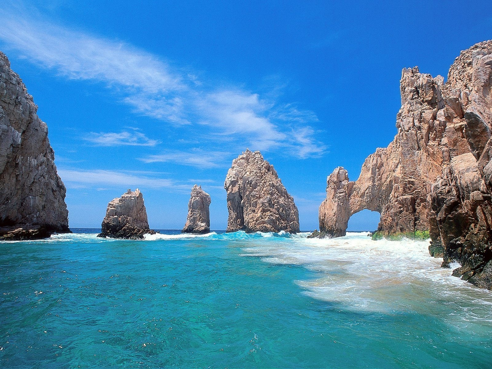

Se encuentra ubicado a 3 kms de la zona arqueológica de Chiche Itza, 35 minutos de la ciudad colonial de Valladolid y a solo una hora y media de Mérida, la ciudad blanca.
Cenote de Ik Kil es un parque rodeado de plantas exóticas y árboles que es el hábitat perfecta para cientos de aves silvestres, tales como: tucanes, loros, cenzontles, cardenales, cazadores de moscas, turquesa mot-mot, y varios más.
Las noches en Ik Kil son una mezcla de sonidos de las ranas, los grillos y monos, ya que se encuentra rodeado de árboles en donde los pequeños animales silvestres como el venado se acercan y desfrutan de la belleza natural que este lugar tiene. Todo esto pasa mientras usted disfruta de las estrellas y se relaja en alguna de las palapas de lujo que tiene aire acondicionado y jacuzzi.
El principal atractivo de Ik Kil es el Cenote, que en su superficie se encuentra adornado de vegetación y en el que se puede ver la profundidad en la que s encuentra. Para llegar deben bajar por una escaleras hechas de piedra y en donde encontraras pequeños balcones para que admires su belleza desde diversos puntos, al llegar hay una plataforma que da acceso a sus aguas frescas y cristalinas en la que se pueden ver sus pequeños bagres que viven en él. Este lugar es ideal después de que usted haya visitado las ruinas mayas de Chichén Itzá o Ek Balam, pues encontrara alivio al refrescarse en sus aguas frescas.
En el mundo de los viajes me conocen como Aristofennes; siendo este nombre el que utilizo en el blog. Soy el blogger de viajes autor de Blogtrip, un humilde espacio personal de relatos viajeros. Nací en la ciudad caribeña de Santa Marta Colombia y me crié a punto de arroz con coco, pescado frito y música tropical. Resido en Francia y poseo la doble nacionalidad franco-colombiana. Pero me considero un ciudadano del mundo. Por cosas del destino, mi infancia y mi adolescencia la pasé viajando por toda Colombia con mi familia. Yo pienso de ahí nació ese deseo de ser nómada moderno y de estar en constante movimiento.